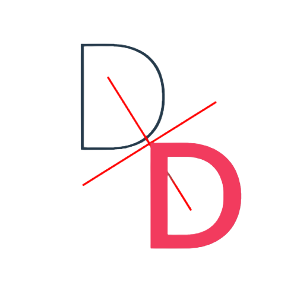

Digital Doctor
Logo

Name : Digital Doctor
Slogan : Doctor! Make your self Digital.
Introduction
Digital Doctor is a mobile base Application mainly targeting doctors and regular patient or any user who want to connect to doctors nearby. The main goal of this product is to change traditional prescription patten. Through this app, the doctor can give his/her patient a prescription in PDF form. Because of the PDF form, it benefits to manage user records and easier to get medication through the pharmacy. Talk about additional functionality, the patient can easily find nearby doctors as the app list down all the registered doc and it comes handy when the pharmacy can get a prescription in PDF or QR code that directly transfers a list of medication one needs. And yes user can keep a log of his medication and it helps the doctor to understand health more precisely.
Role in Project
This was a group project of 4 people. I am interested in UI/UX so the whole project's UI and flow were done by me. And I was mainly involved in the development part. We've made it in android using JAVA. I along with one of the group members worked on front-end design (i.e. XML and java files) and the other two world on backed and APIs.
Our Process
We have used the agile method to develop this project. We've gone through the whole prescription system and visited 2 hospitals. Using mind-map, Emphty canvases, and different flow charts we've perfected the main problem statement and tried to solve as much as we can. For effective backend, we've designed DB also as per the application requirement.
Here is Power Point Presentation of Final Project
In this PPT, You can get detailed information about our project and where you can see different type
of canvas and Flow Diagrams.
Here is Paper that we present in our Final Project
For the basic research in this field and to store all the prescription in the cloud data store to
increase reusability for a long time, our team have gone through different materials available on
this topic and write one research paper on digital prescription and cloud storage. It was published
in Advances and Applications in mathematical sciences - volume 20, issue 11, September 2011.
Screenshot
Below image take you to All detail Images of Project.

Design Scheme
Red and white have been the traditional color for medication or any health department so we've used the same approach for this too.